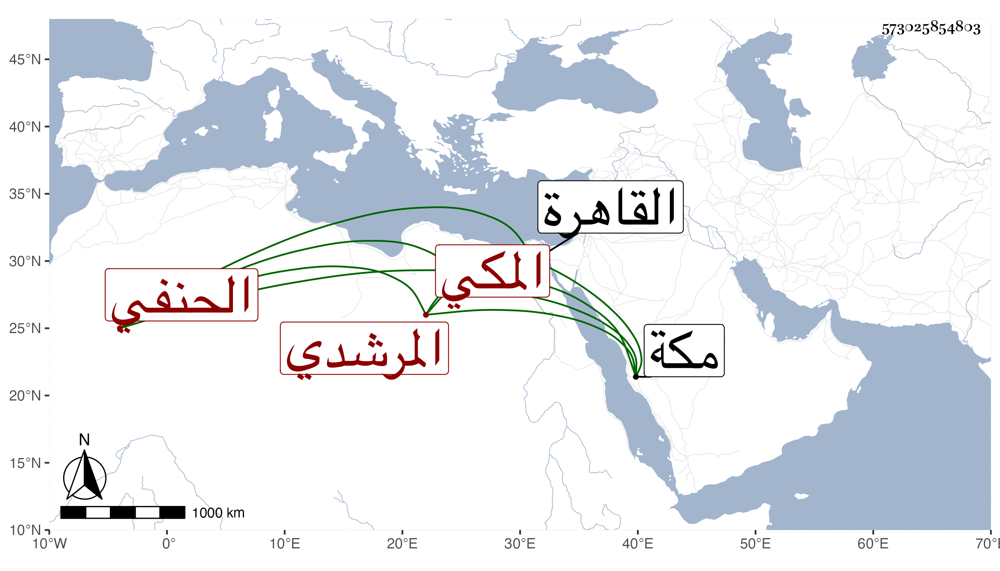

0902Sakhawi.DawLamic.ITO20230111-ara1.EIS1600.573025854803
Biography ID: 573025854803
805
علي بن عبد الرحمن بن محمد بن إبراهيم نور الدين بن الوجيه بن الجمال المرشدي المكي الحنفي الماضي أبوه والآتي جده . ممن اشتغل في الفقه والعربية وغيرهما ولازمني بمكة في شرحي للألفية وغيره رفيقا لابن الزعيفريني وغيره ، ودخل القاهرة وغيرها ولزم الجمالي أبا السعود والتفت إليه وقرأ على الخطيب الوزيري وغيره وفيه فضل مع سكون وعقل وقد حصل له صدع في عصبه انقطع له مدة وصار مشيه بتكليف كان الله له .
